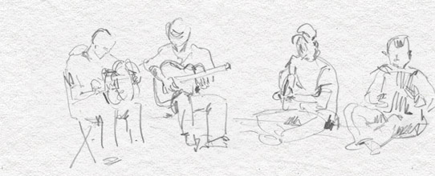
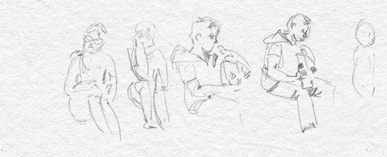

NORMATIVA RELACIONADA A LA ACTIVIDAD DE LA MUSICA
CREACION DEL INAMU (INSTITUTO NACIONAL DE LA MUSICA)
- Ley 26.801:Creación del Instituto Nacional de la Música como órgano de fomento

DIFUSION DE MUSICA
- Ley de Medios: Art 65: Declara la necesidad de difusión por radios de música nacional y música nacional independiente
DERECHO DE AUTOR
- Constitución Nacional: Art 17:El Derecho de Autor en la Constitución Nacional
- Ley 11723: Ley de Propiedad Intelectual
- Decreto 41233/34: Decreto Reglamentario de la Ley 11.723
- Decreto-Ley 12088/57: Convención Universal sobre Derecho de Autor
- Ley 3192: Tratado Internacional sobre Propiedad Literaria y Artística
- Ley 14186: Convención Interamericana sobre el Derecho de Autor, en Obras Literarias, Ciéntificas y Artísticas
- Ley 17251: Convenio de Berna para la Protección de las Obras Literarias y Artísticas
- Ley 19963: Convención de Berna para la Protección de las Obras Literarias y Artísticas
- Ley 22195: Convenio que establece la Organización Mundial de la Propiedad Intelectual
- Ley 25140: Apruébanse el Convenio de Berna para la Protección de las Obras Literarias y Artísticas, el Tratado de la Organización Mundial de la Propiedad Intelectual 'OMPI' sobre Interpretación o Ejecución y Fonogramas y el Tratado de la Organización Mundial de la Propiedad Intelectual, estos dos últimos, abiertos a la firma en Ginebra.
DIRECCION NACIONAL DEL DERECHO DE AUTOR (DNDA)
- Decreto 16697/59:Registro de Obras Publicadas
- Decreto 7616/63: Vencimiento de Obras Inéditas

SOCIEDAD DE AUTORES Y COMPOSITORES (SADAIC)
- Ley 17648: Ley de SADAIC
- Decreto 5146/69: Decreto Reglamentario de la Ley 17648
- Decreto 8478/65: Pago del Derecho de Autor
- Ley 23833: Autorización a SADAIC para microreproducir sus archivos
- Ley 23929: Convención Internacional sobre la Protección de los Artistas Intérpretes o Ejecutantes, los Productores de Fonogramas y los Organismos de Radiodifusión, adoptada en Roma.
ASOCIACION ARGENTINA DE INTERPRETES (AADI)
- Decreto 746/73: Quiénes son Intérpretes
- Decreto 1670/74: Consentimiento de los Intérpretes
- Decreto 1671/74: Cobro y pago del Derecho de Intérprete y Productor de Fonogramas
- Ley 23929: Convención Internacional sobre la Protección de los Artistas Intérpretes o Ejecutantes, los Productores de Fonogramas y los Organismos de Radiodifusión, adoptada en Roma.
CAMARA ARGENTINA DE PRODUCTORES DE FONOGRAMAS Y VIDEOGRAMAS (CAPIF)
- Decreto 1715/58: Otorgamiento de Personería Jurídica a CAPIF
- Decreto 1671/74: Cobro y pago del Derecho de Intérprete y Productor de Fonogramas
- Ley 19963: Convenio para la protección de los Productores de Fonogramas contra la reproducción no autorizada de sus fonogramas del 29 de octubre de 1971
- Ley 23929: Convención Internacional sobre la Protección de los Artistas Intérpretes o Ejecutantes, los Productores de Fonogramas y los Organismos de Radiodifusión, adoptada en Roma.
AADI-CAPIF
- Decreto 1671/74: Cobro y pago del Derecho de Intérprete y Productor de Fonogramas
- Resolución 390/05: Aranceles de AADI-CAPIF

DERECHOS LABORALES
- Ley 14597: Ley del Ejecutante Musical. La presente ley, si bien fue reglamentada por Decreto 520/05, luego fue derogada por Decreto 636/06.
- Decreto 520/05: Decreto Reglamentario de la Ley 14597 - Derogado
- Decreto 636/06:Decreto que derogó el Decreto 636/06
- Convenios Colectivos de Trabajo: Convenidos firmados
IVA
- Ley 26115:Exención de IVA a espectáculos musicales